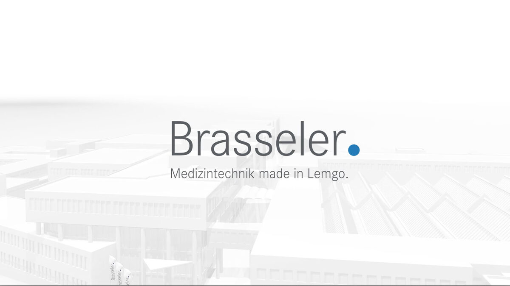
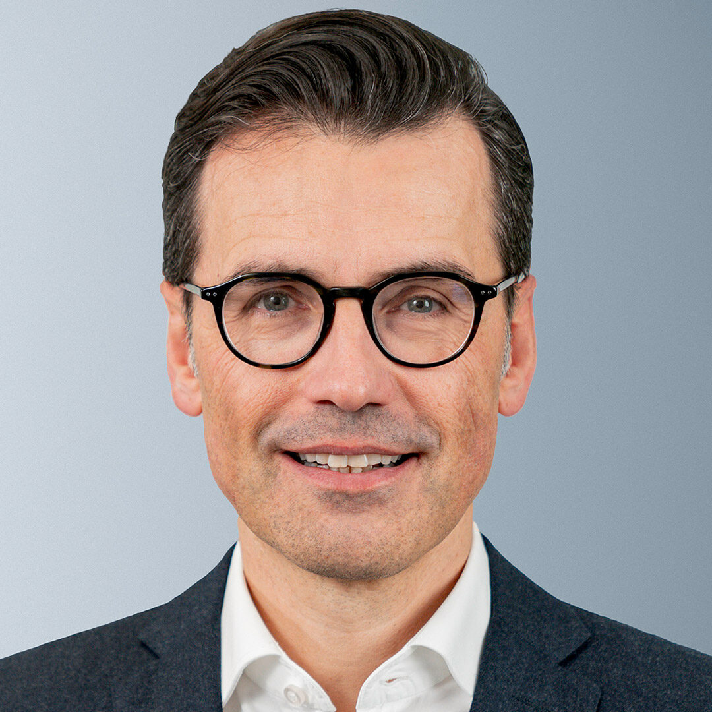

The Medical Technology Group Gebr. Brasseler publishes its preliminary results for the financial year 2023
Published on 28 March 2024
Lemgo, 28 March, 2024
- The sales revenues of the Group slightly declined in the second half of the year. Annual growth increased by 7.3% compared to 2022, which means that the Group’s growth continued to outpace the medical technology industry’s growth of 3% to 4% worldwide*
- With net sales of EUR 227.6 million, the Brasseler Group achieved the highest figure in the company’s history in its anniversary year 2023
- Very dynamic growth in the business area as a supplier (CDMO**) of leading global medical technology groups in the field of orthopedics and neurosurgery as well as dental implantology
- The Group’s largest business domain, dentistry, held its position in a difficult market environment
The medical technology group Gebr. Brasseler presented its preliminary results for the financial year 2023, which also marked the company’s 100th anniversary.
The family-run company, now in its 3rd generation, continued its growth rate in 2023, despite certain challenges in the markets. Net sales amounted to 227.6 million euros, an increase of 7.3% on the previous year’s very good result. At the half-year mark, growth was even 1.2 percentage points higher.
The situation regarding the operating result has improved again compared to the previous year. “Comparison within the medical technology sector has shown that we are once again in the upper mid-range. This is an important indicator of our competitiveness on an international level,” says Stephan Köhler, Spokesman of the Company Management. “The renewed drop in energy prices and the systematic drive to increase productivity in the logistic, packaging production and production sectors have contributed to this. Furthermore, some infrastructure modernization projects could not be implemented as planned. These are on the agenda for 2024.”
50 new full-time positions were created at the Lemgo site in 2023.
Developments in the business segments
At a growth rate of just under 3 %, the traditional core business of dentistry grew slightly compared to 2022, albeit below plan. Almost all regions contributed to this growth, with the EMEA and DACH regions recording significant growth in the last quarter compared to the same period in the previous year. The price increases implemented could not be fully realized in the markets. The Komet brand performed well on an international level in the “dental consumables” sector.
The chosen path of internationalization, product innovation and digitalization was consistently pursued in the area of dentistry. Sales via digital channels increased significantly and new products – particularly in the root canal treatment segment – generated business with new customers.
The development in the CDM “Contract Development and Manufacturing” business model as an (OEM***) supplier for globally leading medical technology companies in orthopedics and neurosurgery as well as dental implantology was very dynamic.

“Thanks to early certification in compliance with the new, stricter European Medical Device Regulation, forward-looking investments and a tailwind due to the still ongoing catch-up effect from the coronavirus pandemic, we saw a growth of 27% in orthopedics and neurosurgery and 11% in dental implantology by the end of the year,” says Stephan Köhler.
A slight slowdown in growth was observed in these two business fields in the second half of 2023. The two previously separate business units were merged at the turn of the year (see press release 7 February, 2024). The establishment of a technical sales office for the strategically important US market was expedited in the second half of the year. Based in Savannah, Georgia, the new company commenced operations at the turn of the year and will focus exclusively on large medical technology companies in the USA. The aim is to offer customers Komet Medical’s comprehensive technical expertise at the earliest possible stage.
* Source: Medical technology: a growth industry with challenges (ikb-blog.de)
CDMO**: A CDMO (short for Contract Development and Manufacturing Organization) is a company that usually offers specialized services related to the development and manufacture of medical products on behalf of the actual developer.
* OEM**: Original Equipment Manufacturers (OEM) are manufacturers of products or components who do not sell these articles themselves.
Download press releasePress Contact
Melanie Köhler
Corporate communication
Phone +49 (0) 160 3447748
presse@brasseler.de